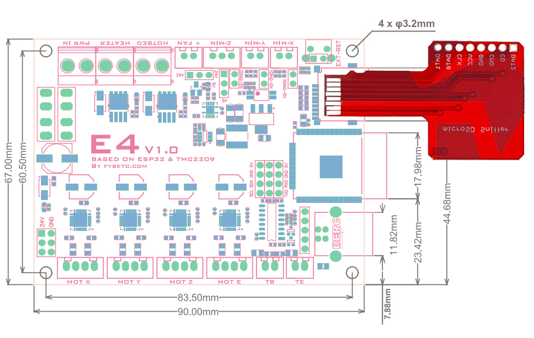

ESP32 + 4× TMC2209 · Firmware v16.03 · 8 connexions annotées

| # | Connecteur | Emplacement sur la carte | Étiquette | Câblage TPPA |
|---|---|---|---|---|
| ① | PWR IN | Bornier 2 vis, coin haut-gauche | +12V / GND | Rouge +12V / Noir GND |
| ② | Z-MIN | 3 broches, rangée du haut | Fin de course ALT | Blanc NO→SIG / Noir GND |
| ③ | Y-MIN | 3 broches, rangée du haut, à droite de Z-MIN | Bouton HOME | Blanc NO→SIG / Noir GND |
| ④ | SD header | Carte fille rouge, droite | MPU-6500 | Rouge 3.3V, Jaune GND, Bleu SCL, Vert SDA |
| ⑤ | USB CH340 | Côté droit de la carte | Flash IDE only | Câble USB standard — Flash Arduino IDE UNIQUEMENT |
| ⑥ | BERG 3×4 | Centre-droit de la carte | CP2102N bypass | Noir GND→pin6 / Jaune TXD→pin9 / Vert RXD→pin12 |
| ⑦ | MOT-X | Bornier 4 vis, bas 1er | Moteur AZM | Noir A+, Vert A−, Rouge B+, Bleu B− |
| ⑧ | MOT-Y | Bornier 4 vis, bas 2e | Moteur ALT | Noir A+, Vert A−, Rouge B+, Bleu B− |